Bí quyết làm nồi nước lèo bún bò Huế đậm đà chuẩn vị Huế mà các mẹ nên lưu lại
Đăng bởi: Nhóm 05
Để có một tô bún bò Huế ngon đúng chuẩn Huế thì phải trải qua rất nhiều công đoạn, từ nồi nước lèo cho đến nguyên liệu có trong món bún. Và bạn có biết bún bò Huế đã được liệt kê vào một trong 50 món ăn ngon nhất trên toàn thế giới chưa? Cái hồn nói lên món ăn nổi tiếng này phải kể đến hương vị nước lèo vô cùng đặc trưng, ngon ngọt đậm đà. Vậy bạn đã biết bí quyết làm nồi nước lèo bún bò Huế chuẩn vị Huế chưa?
Bún bò Huế là món ăn nổi tiếng, là cái hồn của người Huế, và đặc biệt được khá nhiều du khách trên quốc tế ưa chuộng. Để làm nên một tô bún bò Huế có hơi cầu kì một chút nhưng chính cái sự cầu kỳ cùng kiên nhẫn đấy đã tạo nên một nồi nước lèo chuẩn vị truyền thống người Huế.

Tô bún bò huế cùng đĩa rau tươi xanh bắt vị cho bữa sáng
Đầu tiên là lựa chọn thịt bò và chân giò tươi
Thịt bò phù hợp cho món bún bò Huế này chính là bắp bò, nếu được thì chọn loại bắp hoa thì mới thơm mới ngon được. Chân giò nên chọn chân giò phía trước, thường thì nó sẽ có thịt săn ăn sẽ thơm ngon hơn. Nếu được bạn cũng có thể nhờ người bán lựa chọn đúng loại thịt bò cũng như tham khảo thêm cách lựa thịt bò phù hợp. Mua thêm một ít xương bò để ninh cùng trong nồi nước lèo bún bò Huế.
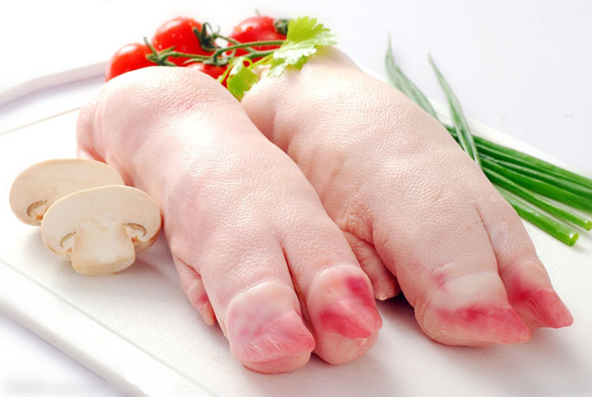
Chân giò khi chọn bạn nên chọn chân giò phía trước sẽ ngon hơn và ít mỡ hơn chân giò phía sau
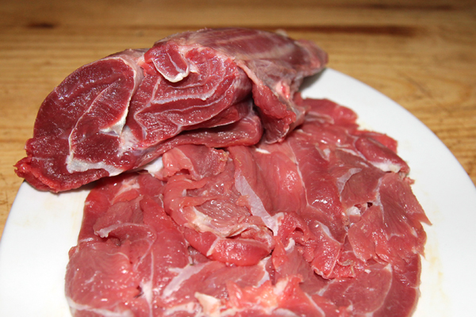
Thịt bắp bò sẽ góp phần vui miệng hơn cho món bún bò Huế
Sơ chế thịt bò
Chân giò sau khi mua về thì cạo thật sạch lông, cắt hết móng đi và rửa sạch lại. Chặt chân giò thành những khoanh tròn vừa phải. Cho chân giò và xương bò vào nồi nước sôi luộc đến khi nước sôi trở lại thì chắt bỏ bớt. Sau đó rửa lại chân giò cùng xương bò cho sạch các bọt bẩn.
Còn về phần thịt bò sau khi mua về bạn rửa sạch và cắt lát mỏng vừa ăn. Bạn cũng nên lưu ý chọn thịt để làm bún bò Huế là thịt bắp bò, khi ăn sẽ ngon hơn nhờ phần gân kèm theo từng sới thịt săn chắc.
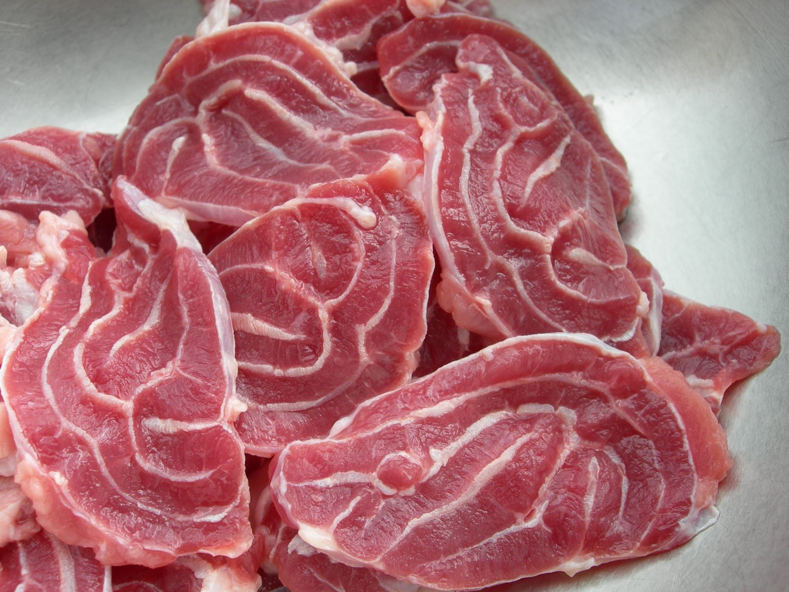
Thịt bò sau khi rửa, cắt mỏng thành những miếng vừa ăn
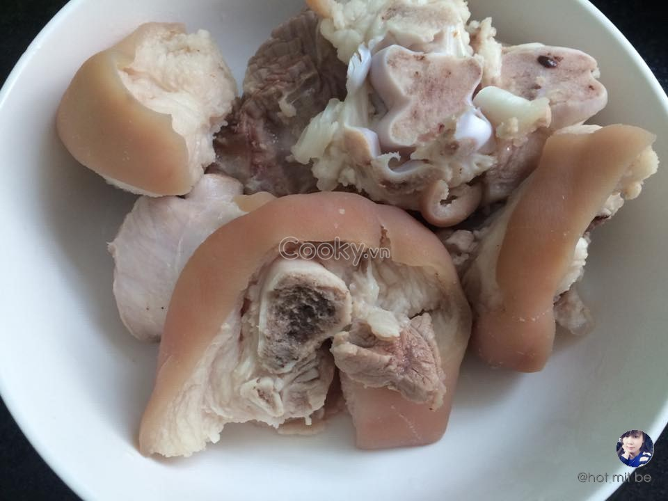
Chân giò heo sau khi nấu chín
Làm nồi nước lèo bún bò Huế chuẩn vị Huế
Chân giò, xương bò cùng bắp bò cho vào cùng 1 nồi, thêm sả và hành tím đập dập, cho nước vào ninh khoảng một cho đến 2 giờ đồng hồ. Bắp bò cho món bún bò Huế thì không nên luộc nhừ quá sẽ mất đi chất, cũng đừng luộc non quá sẽ bị dai. Để kiểm tra xem bắp bò đã đủ độ mềm hay chưa sau 30 phút, lấy bắp bò ra riêng và tiếp tục ninh chân giò, xương bò.
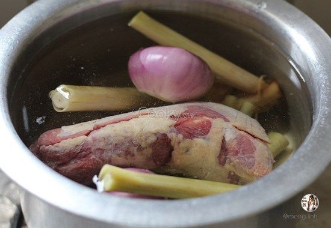
Luộc chân giò, xương bò, bắp bò cùng sả và củ hành tím
Ninh nhỏ lửa rồi thêm hành tây cắt múi cau vào thêm thì nước lèo bún bò Huế sẽ thơm ngọt hơn và có đủ thời gian tiết chất ngọt trong xương. Bạn nên nhớ khi đang hầm xương muốn châm nước thêm tuyệt đối không cho nước lạnh vào, vì vậy thì nước xương không ra chất ngọt nữa, phải châm nước nóng vào.
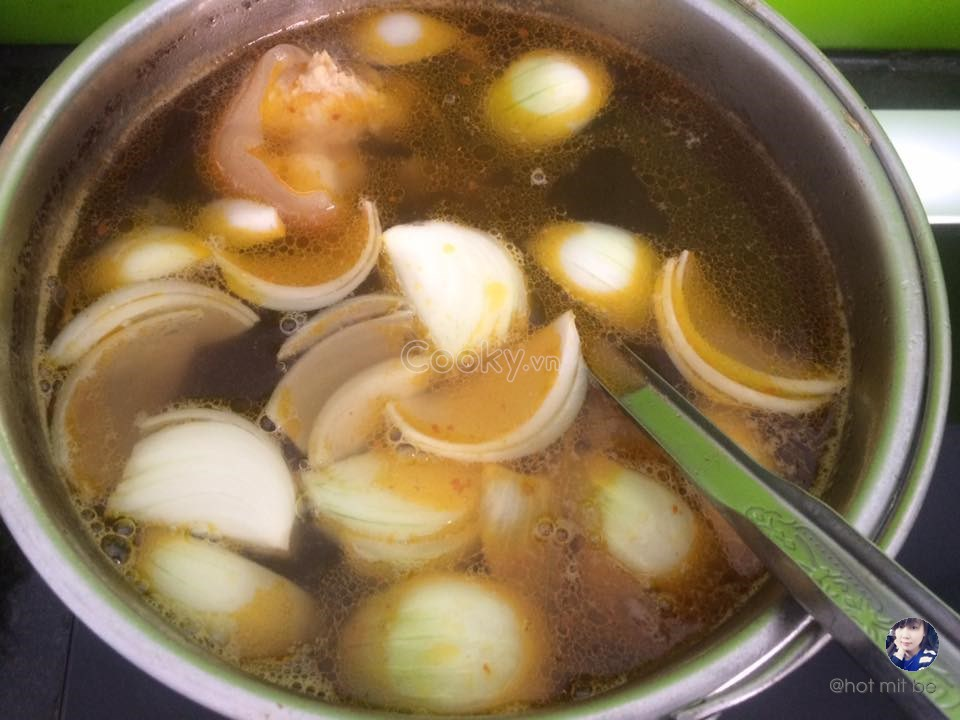
Luộc chân giò, xương bò, bắp bò cùng sả và củ hành tím
Khi nước sôi cho một ít muối vào, để lửa cho nước sôi liu riu, bắt đầu vớt nước béo và bọt màu vàng. Nấu cho đến khi nồi nước lèo bún bò Huế cạn dần gần 1/3 lượng nước, đoạn này tuy hầm lâu nhưng làm cho nước sánh lại và không cần đến hộp bột nêm bún bò Huế có sẵn.
Một tô cho 3 muỗng mắm ruốc cho vào nhiều nước lạnh tí, khuấy đều, sau đó cho bã lắng xuống rồi vớt lấy phần nước trong của mắm ruốc này cho vào nồi. Nêm nếm nồi nước sao cho vừa ăn bằng nước mắm, đường, đường phèn và một ít bột ngọt.
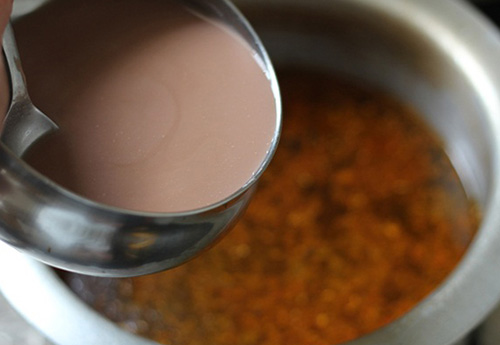
Bỏ nước mắm ruốc vào nồi nước lèo bún bò Huế
Trước đó bạn phi thơm sả băm cùng với dầu ăn, chắt lấy phần dầu rồi đun nóng. Sau đó cho màu điều vào nồi nước lèo bún bò Huế để lấy màu.
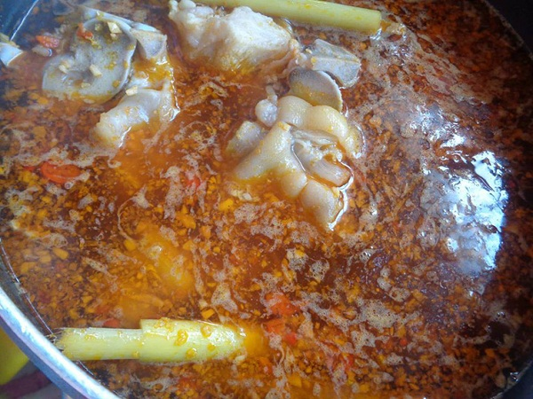
Trình bày và dùng bún bò Huế
Giờ thì chuẩn bị cho tô bún bò Huế luôn nhé, bắp bò thái lát mỏng, trụng bún sợi to trong nồi nước sôi rồi vẩy cho sạch nước. Cho bún vào tô, tiếp đó xếp chả cua, huyết, chân giò, bắp bò rồi thêm ít hành tây thái mỏng, rắc chút hành mùi tàu thái nhỏ, rồi chan nước lèo thật sôi. Bún bò Huế mà ăn kèm với ớt chưng, hoa chuối thái sợi rồi vắt thêm miếng chanh thì tuyệt vời lắm đấy nhé!
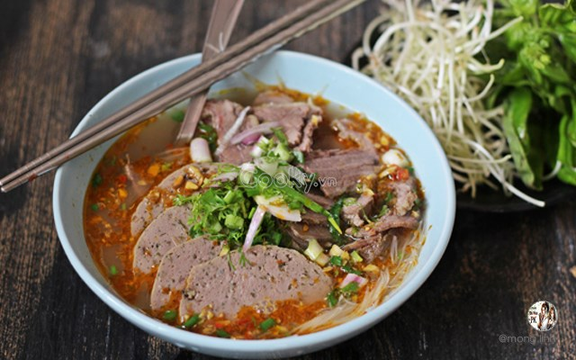
Bát bún bò huế sau khi trình bày
Vậy là bạn đã biết bí quyết làm nồi nước lèo bún bò Huế chuẩn vị Huế rồi. Nồi nước lèo ngọt, vị ngọt tiết ra từ xương, từ giò, thịt bò nấu cùng chứ không phải vị ngọt từ đường cát.
Ứng dụng các bí quyết trên để nấu thêm nhiều món bún khác nhé! Tham khảo một vài công thức dưới đây:
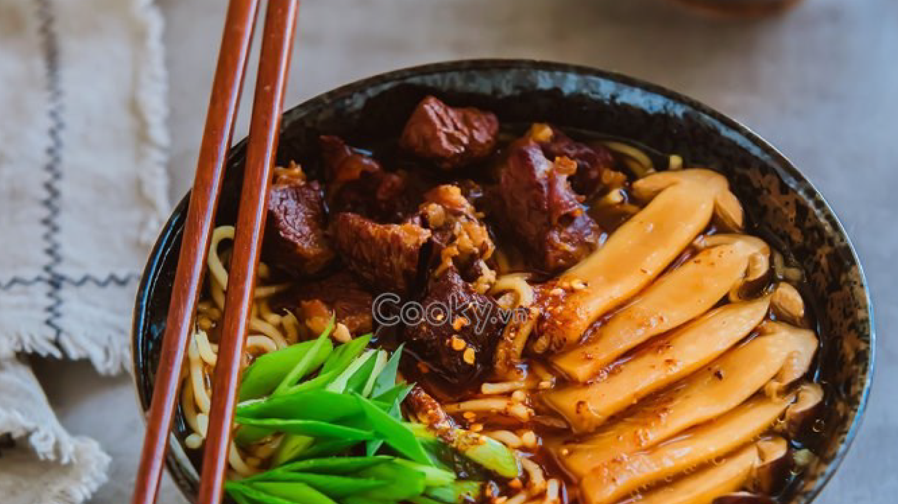
Bún bò nấm
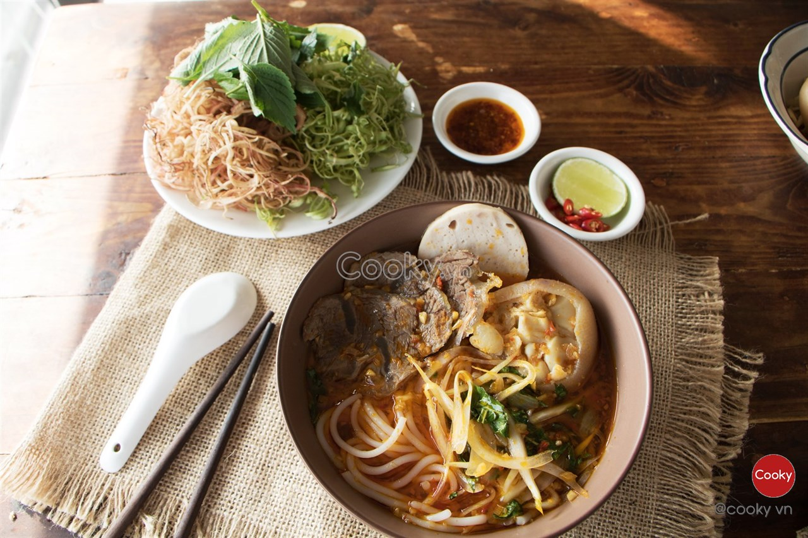
Bún bò giò heo
Chúc bạn thành công và ngon miệng với cách nấu bún bò Huế mà mình đã chia sẻ trên đây!
TOP CÁC MÓN NGON

13.400 lượt xem

15.000 lượt xem

23.456 lượt xem

12.202 lượt xem

20.000 lượt xem

10.050 lượt xem